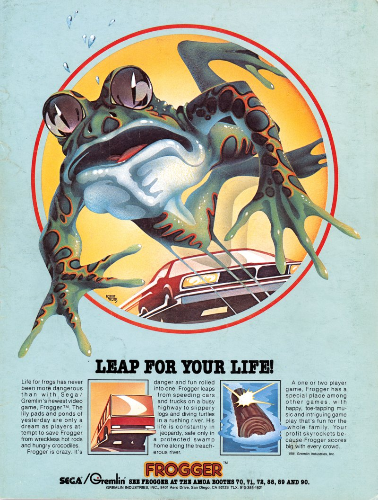
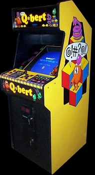
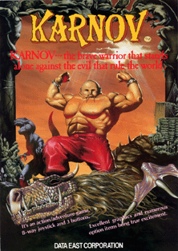
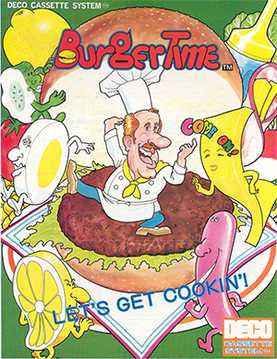
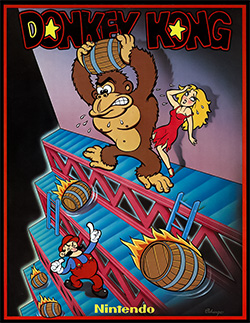

ESPECIAL · 1 DE MAYO
TOP 10 TRABAJADORES RETRO
LOS PERSONAJES QUE MAS SE ROMPEN EL LOMO POR NOSOTROS
HOMENAJE LABORAL
DEL #10 AL #1
Diez personajes del videojuego retro que cumplen horario, asumen turnos sin protesta y siguen sus tareas hasta despues del Game Over. Sin sindicato, sin vacaciones pagas, sin previsional. Vamos desde el ultimo del escalafon hasta el rey del overtime.
#10
CONTRATO LABORAL

ARCADE / ATARI
TARROVISIONCH 10
NO SIGNAL
Inserta gameplay aqui
FROGGER — QA TESTER VIAL
ARCADE · 1981 · KONAMI · CRUCE PEATONAL
▶ HOJA DE SERVICIOSTester profesional de pasos peatonales con cero work-life balance. Cruza autopistas, rios y troncos flotantes durante toda su jornada. Sin chaleco reflectivo, sin paso cebra, sin semaforo. Una falla en el reporte y vuelve al checkpoint anterior. El primer hero del trafico.
#9
CONTRATO LABORAL

ARCADE / ATARI
TARROVISIONCH 09
NO SIGNAL
Inserta gameplay aqui
Q*BERT — PINTOR INDUSTRIAL
ARCADE · 1982 · GOTTLIEB · ANDAMIO ISOMETRICO
▶ HOJA DE SERVICIOSPintor industrial de piramides isometricas. Sube y baja cubos cambiandoles el color a saltos. Riesgos laborales: serpiente Coily, gloops, slick y sam. Lenguaje interno tipo @#!?. Sin arnes, sin EPP, sin curso de altura. Cuando se cae del andamio rebota.
#8
CONTRATO LABORAL

ARCADE / NES
TARROVISIONCH 08
NO SIGNAL
Inserta gameplay aqui
DIG DUG — EXTERMINADOR SUBTERRANEO
ARCADE · 1982 · NAMCO · CONTROL DE PLAGAS
▶ HOJA DE SERVICIOSTecnico especializado en control de plagas subterraneas. Equipo de trabajo: una manguera neumatica para inflar enemigos hasta reventarlos. Tambien sabe tirar rocas desde arriba (poco etico). Sin descanso entre niveles, sin certificacion ambiental, sin abogado.
#7
CONTRATO LABORAL

ARCADE / NES
TARROVISIONCH 07
NO SIGNAL
Inserta gameplay aqui
KARNOV — STRONGMAN DE CIRCO
ARCADE · 1987 · DATA EAST · ARTISTA DE CIRCO
▶ HOJA DE SERVICIOSHombre fuerte de circo ruso reconvertido a cazador de dragones. Escupe bolas de fuego como acto principal, salta, derrota dinosaurios, fantasmas y minotauros. Trabaja sin descanso del nivel 1 al 9. Sin sindicato del espectaculo, sin AFP, sin contrato fijo.
#6
CONTRATO LABORAL

ARCADE / NES
TARROVISIONCH 06
NO SIGNAL
Inserta gameplay aqui
PETER PEPPER — CHEF MAESTRO
ARCADE · 1982 · DATA EAST · COCINA INDUSTRIAL
▶ HOJA DE SERVICIOSChef que arma hamburguesas gigantes saltando sobre los ingredientes. Persecucion permanente de Mr. Hot Dog, Mr. Egg y Mr. Pickle (sus rivales gastronomicos). Equipo defensivo: pimienta. Cocina sin ayudante, sin descanso entre platos, sin propina pactada.
#5
CONTRATO LABORAL
PAPERBOY
ATARI · 1985
ARCADE / NES
TARROVISIONCH 05
NO SIGNAL
Inserta gameplay aqui
PAPERBOY — REPARTIDOR EN BICI
ARCADE · 1985 · ATARI GAMES · ULTIMA MILLA
▶ HOJA DE SERVICIOSRepartidor juvenil de diarios en bicicleta. Ruta llena de obstaculos: perros sueltos, autos descontrolados, robots, vecinos furiosos. Salario por suscripcion entregada. Si rompe una ventana lo descuentan. Antecedente directo de toda app de delivery moderna.
#4
CONTRATO LABORAL

ARCADE / NES
TARROVISIONCH 04
NO SIGNAL
Inserta gameplay aqui
MARIO — CARPINTERO DE OBRA
ARCADE · 1981 · NINTENDO · CONSTRUCCION DE ALTURA
▶ HOJA DE SERVICIOSAntes de ser fontanero fue carpintero de obra. Trabaja en una construccion vertical donde su jefe gorila le tira barriles desde arriba. Sin casco, sin arnes, sin pago de horas extra. Termina rescatando a su jefa Pauline mientras esquiva accidentes laborales en cada piso. El primer obrero de Nintendo.
#3
PODIO LABORAL
GAME & WATCH
NINTENDO · 1980
HANDHELD LCD
TARROVISIONCH 03
NO SIGNAL
Inserta gameplay aqui
MR. GAME & WATCH — MULTIOFICIO EXTREMO
HANDHELD LCD · 1980 · NINTENDO · MULTITASKING NIVEL DIOS
▶ HOJA DE SERVICIOSEl empleado mas versatil de la industria retro. Chef (Chef), bombero (Fire), salvavidas (Lifeboat), malabarista (Ball), helicopterista (Helmet), pulpero (Octopus), conductor de tren (Mickey), alpinista (Climber), pescador (Squish)... y mil mas. Un cuerpo monocromatico, un sindicato de uno.
#2
PODIO LABORAL
LAKITU
MARIO UNIVERSE
NES / SNES / N64
TARROVISIONCH 02
NO SIGNAL
Inserta gameplay aqui
LAKITU — FREELANCER NUBE
MARIO · 1985+ · NINTENDO · MULTI-CONTRATO
▶ HOJA DE SERVICIOSTortuga sobre nube con jornada laboral imposible. Lunes: tira spinies a Mario en Super Mario Bros. Martes: fotografo oficial en Super Mario 64. Miercoles: rescatista en Mario Kart cuando alguien cae. Jueves: juez de carreras. Viernes: marcador de tiempos. Nunca toma vacaciones. Trabaja para Bowser y para Mario al mismo tiempo (probable conflicto de intereses).
#1
EMPLEADO DEL AÑO
TAPPER
BALLY MIDWAY · 1983
ARCADE
TARROVISIONCH 01
NO SIGNAL
Inserta gameplay aqui
TAPPER — BARMAN ABSOLUTO
ARCADE · 1983 · BALLY MIDWAY · ATENCION DE PUBLICO
▶ HOJA DE SERVICIOSBarman de 4 barras simultaneas atendiendo clientes ansiosos. Sirve schop tras schop, recoge los vasos vacios que vuelven volando, atrapa propinas, esquiva borrachos. El unico personaje del top que ademas limpia la barra y aguanta clientes molestos. Sin sindicato gastronomico, sin pago de domingo, sin descanso entre clientes. Empleado del año retro. Honor.
ANALISIS DEL TOP
TODOS NECESITAN UN SINDICATO
10 personajes que cumplieron horario, asumieron turnos y siguieron trabajando despues del Game Over. Cero vacaciones pagadas, cero AFP, cero seguro de accidentes. Conclusion del top: la industria del videojuego retro fue tierra de nadie laboral. Honor a estos heroes pixelados que siguen sirviendo, repartiendo y exterminando.
CIERRE
FELIZ 1 DE MAYO
Comentanos cual te falto en este top y cual es tu trabajador retro favorito. Si te gusto el especial, dejanos like y suscripcion. La proxima volvemos al catalogo regular con mas Retrotarros.